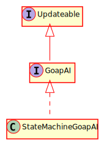

Hierarchy-Diagram
{kind=link}
Legend
 class
class
 abstract class
abstract class
 interface
interface
 public property
public property
 protected property
protected property
 private property
private property
 public method
public method
 protected method
protected method
 private method
private method
underlined
static property/method
italic
abstract property/method
Hierarchy
- Updateable
- GoapAI
Implemented by
Index
Properties
current
All current statuses this AI has
goal
Current goal of the AI
plan
Current actions to be carried out
planner
Once we have no actions, the planner can be called to find a new sequence of actions
possible
All possible actions that can be carried out
Methods
activate
Activates this AI from a stopped state and allows variables to be passed in
Parameters
options: Record<string, any>
Returns void
change
Change the goal to a new goal
Parameters
goal: string
Returns void
destroy
Clears references from to the owner
Returns void
handle
Handles events from the Actor
Parameters
event: GameEvent
Returns void
initializeAI
Initializes the AI with the actor and any additional config
Parameters
owner: GameNode
options: Record<string, any>
Returns void
update
Updates this object.
Parameters
deltaT: number
The timestep of the update.
Returns void
Defines a controller for a bot or a human. Must be able to update